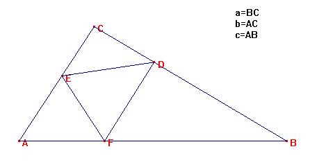
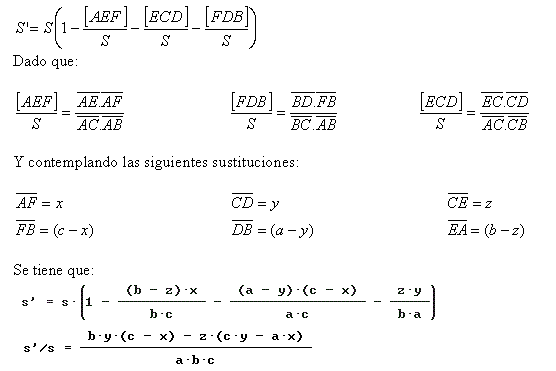
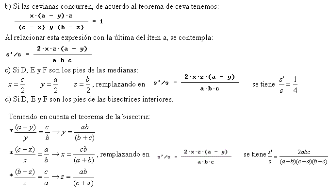
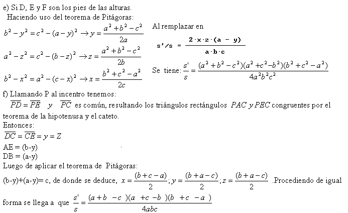

.
Solución de: Correa Pablo Ariel. Profesor del colegio del Centenario. Buenos Aires Argentina
Problema 296
Propuesto por Juan Bosco Romero Márquez, profesor colaborador de la Universidad de Valladolid
Sea ABC un triángulo de lados a=BC, b =AC y c =AB. Sea, DEF un triángulo inscrito en ABC, tal que los puntos D, E y F, estén respectivamente sobre los lados BC, AC y AB.
Si S´, es el área de DEF y S es el área de ABC respectivamente, se pide :
a) Hallar el cociente de las áreas S´/S.
b) ¿Cuánto vale S`/S si las cevianas AD, BE y CF, concurren ?
c) Si D, E y F son los pies de las medianas, S'/S=1/4
d) Si D, E y F son los pies de las bisectrices interiores, es
S'/S= 2abc/((a+b)(a+c)(b+c))
e) Si D, E y F son los pies de las alturas, es:
S'/S=(( a2+b2-c2) (a2+c2-b2) (b2+c2-a2))/ (4 a2b2c2)
f) Si D, E y F son los pies de las perpendiculares a los lados desde el centro de la circunferencia inscrita.
S'/S=((a+b-c) (a+c-b) (b+c-a))/ (4abc)
g) Comparar los resultados de f) y e)
Scheffer, J.( 1878 ) : "On the ratio of the area of a given triangle to that of and inscribed triangle" Analyst, 1878. Vol.4, pp.173

a)


